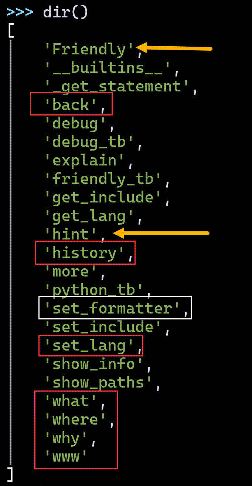

Introducing friendly
[long version]
PyCon Education Summit - May 12, 2021André Roberge
He/himhttps://github.com/aroberge/friendly https://github.com/aroberge/talks
who( am I? )
Python hobbyist trying since 2004 to help other people learn Python through various projects:
- RUR-PLE
- Reeborg's World
- Crunchy
- docpicture
- AvantPy
- friendly
- etc.
who( are you? )
I assume that most of you have experience and/or interest in helping beginners learn Python.
what( is friendly? )
A tool that enhances Python tracebacks to make them easier to understand.
what( is friendly? )
Initial idea: given a traceback with an error message
- Add explanation in "simple English" about what the error message means.
- Make it posssible to translate this explanation into other languages (e.g. French).
friendly now does much more than that.
friendly used to be called friendly-traceback.
>>> import this
...
Explicit is better than implicit.
...friendly-traceback is more explicit than friendly.
Why was the name changed?"Demo" 1
import turtle as t
for i in range(4):
t.forward(100)
t.left(90)"Demo" 1: expected

"Demo" 1: result
> python turtle.py
Traceback (most recent call last):
File "turtle.py", line 3, in <module>
import turtle as t
File "...\turtle.py", line 6, in <module>
t.forward(100)
AttributeError: partially initialized module
'turtle' has no attribute 'forward'
(most likely due to a circular import)"Demo" 1: running with friendly
python -m friendly turtle.py
Aside: observation
Running a program using an editor such as
IDLE, Mu, or Thonny,
is equivalent to doing
python -i my_program.py
# my_program.py
answer = 42
print('Hello World!')
Hello World!
>>> answer
42
>>> Back to "demo" 1
python -im friendly turtle.py
...
Friendly Console ...
>>> "Demo" 1: traceback and hint()

"Demo" 1: what()
"Demo" 1: why()
"Demo" 1: where()
 Only one or two frames are shown.
Only one or two frames are shown.
"Demo" 1: www()


"Demo" 1: what() in French

"Demo" 1: what(...)
"Demo 1": summary
We can use friendly to ask questions and obtain answers helping us understand what caused a given traceback.
how_to( deal with typos? )
Can a REPL be friendly?


how_to( install? )

But first, an aside.
how_to( ... )
Use friendly as an exception hook
from friendly[.X] import *
install(...)
from friendly[.X] import *
from friendly[.X] import start_console
start_console(...)
# friendly_runner.py
from friendly[.X] import run
run("my_program.py", ...)

"Demo"

 Mu
Mu
"Demo"


"Demo"
from friendly.jupyter import *
Python 3.10 - NameError

friendly - NameError

friendly - NameError

Python 3.10 - NameError
Include Fine Grained Error Locations in Tracebacks
May 8 2021
Traceback (most recent call last):
File "test.py", line 2, in <module>
x['a']['b']['c']['d'] = 1
^^^^^^^^^^^^^^^^
TypeError: 'NoneType' object is not subscriptable
Thanks to Alex Hall's executing which uses ASTTokens
why( did the name change? )
from friendly import ...
from friendly.idle import ...
from friendly.mu import ...
from friendly.ipython import ...
from friendly.jupyter import ...
# are better than
from friendly_traceback.idle import ...Besides, traceback is not exactly a beginner-friendly term and, in the future, friendly might do more than simply helping with tracebacks ...
what( are warnings? )

why( import * ? )
 Friendly.why() == why(), etc
who( influenced the design of friendly? )
- Nicholas Tollervey (Mu)
- Aivar Annamaa (Thonny)
- Julien Palard (HackInScience)
- Alex Hall (futurecoder + many packages)
- Sylvain Desodt (DidYouMean-Python inspired by Raymond Hettinger)
- Michael Kennedy, Brian Okken, and Hannah Stepanek in PythonBytes podcast #220
- plus many others who filed issues, etc.
Many features not originally thought of when I started this project have been incorporated in its design.
Can YOU think of possible improvements to include in the road to version 1.0?
where( is the code? )
https://github.com/aroberge/friendly
You will find a link to the documentation.
But perhaps there is a more pythonic way ...
where( is the documentation? )üòè
> python -m pip install friendly
> python -m friendly
Friendly Console version ...
>>> www()